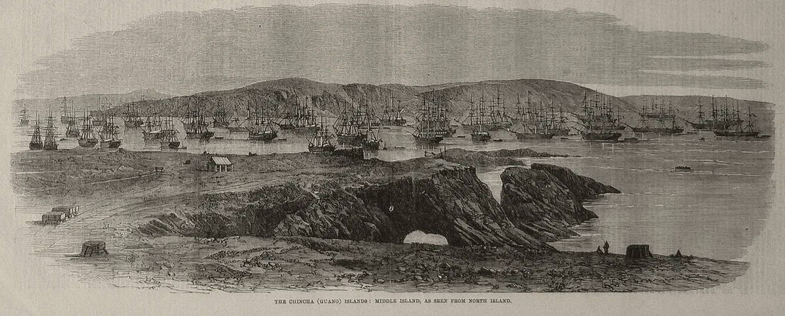

· Edición 68 · 3 min de lectura
Bacterias diseñadas para abonar el maíz ya se prueban en el campo

Bacterias diseñadas para abonar el maíz ya se prueban en el campo
En pocas palabras. Bacterias modificadas para darle nitrógeno al maíz ya se prueban en fincas de Estados Unidos, y la empresa que las desarrolla, con científicos de tres países, sugiere que algún día podrían reemplazar hasta la mitad del fertilizante sintético. A Colombia le importa: compra afuera más de 90 de cada 100 toneladas de su fertilizante. Brasil ya lo hace con la soya; en el maíz, las mejores cifras las publican las empresas que venden las bacterias.
El dato curioso. En 1863, cuando The Illustrated London News publicó el grabado de arriba, decenas de veleros esperaban en las islas Chincha, en Perú, para cargar guano: excremento de aves marinas, el abono natural más apreciado de la época. Tanto, que en 1856 Estados Unidos autorizó a sus ciudadanos a reclamar islas deshabitadas con guano. El reemplazo salió de un laboratorio: en 1908, el químico alemán Fritz Haber pidió la patente para fabricar amoníaco con el nitrógeno del aire.
¿Qué está cambiando? En 2025, la microbióloga brasileña Mariangela Hungria, de Embrapa, el instituto agropecuario de su país, ganó el Premio Mundial de la Alimentación por unas bacterias que viven en la raíz de la soya y le dan el nitrógeno que antes salía de un bulto. Cubren unas 85 de cada 100 hectáreas de soya de Brasil, según la fundación del premio.
Pero la soya y el fríjol alojan esas bacterias por naturaleza; el maíz, el arroz y el trigo, no. Un comentario publicado el 10 de noviembre en Nature Biotechnology propone bacterias modificadas para hacerlo. Ya se prueban en lotes pequeños de maíz en Estados Unidos, según Nature.
36 de cada 100
Venían de fertilizante sintético en los años sesenta. El resto, del estiércol, de bacterias y de la lluvia.
59 de cada 100
Venían de fertilizante sintético en la década de 2010.
Fuente: FAO, balance de nutrientes del suelo (FAOSTAT)
Lo que cambia en 10 a 50 años: cerca de la mitad de la humanidad come gracias al nitrógeno de fábrica, según una estimación de 2008 en Nature Geoscience, y la Agencia Internacional de Energía proyecta que la producción de amoníaco crezca casi 40% a 2050. Si las bacterias cumplen, parte de ese abono se haría en la raíz.
¿Por qué?
- Una fábrica que gasta. Hacer amoníaco consume cerca de 2% de la energía final del mundo, según la Agencia.
- Mucho se pierde. En 2022, los campos recibieron 82 millones de toneladas de nitrógeno más de las que se llevaron las cosechas, según la FAO. La bacteria lo entregaría en la raíz y se perdería menos, según los autores.
¿Qué significa para Colombia?
- Abono importado. Colombia compra afuera 94 de cada 100 toneladas de fertilizante, según la SAC, el gremio agrícola; otros dicen 90. En abril, el bloqueo del estrecho de Ormuz subió la urea 50%: el abono de una papa de Boyacá se decide, en parte, en el golfo Pérsico.
- Ya hay bacterias aquí. El ICA tiene registrados inoculantes de Agrosavia, el centro público de investigación agropecuaria, para soya y fríjol.
¿Quién se está preparando? Brasil autorizó en septiembre ensayos de Switch Bioworks, la empresa que encabezó el comentario. En Estados Unidos, Pivot Bio ya vende bacterias editadas para el maíz.
Pero ojo.
- Lo miden los que venden. Pivot Bio dice que, en sus ensayos de 2025, sus bacterias reemplazaron unos 37 kilos de nitrógeno sintético por hectárea. La cifra es suya.
- Una parte, no todo. Switch calcula que su primer producto reemplazaría cerca de 25% del abono sintético de una finca.
- Transgénicas. Las de Switch llevan ADN de otras especies: más permisos y más desconfianza.
Qué hacer con esto
Cómo prepararse. Nada urgente. Quien siembre soya o fríjol puede preguntarle a su agrónomo por los inoculantes ya registrados.
Ojo con el cuento. «Reemplaza la mitad del fertilizante.» Preguntar en qué cultivo y medido por quién. En el maíz, esa mitad es un techo calculado por una empresa, no un resultado.
Dos lecturas
Las dos posturas sobre el tema, en su mejor versión
Prepararse para recibirlas. Un país que importa casi todo su abono gana con cualquier técnica que lo produzca en el propio campo. El ICA y Agrosavia ya saben evaluar bacterias; conviene tener las reglas listas antes de que lleguen.
Ir despacio. Un microbio modificado que se suelta en el suelo es difícil de recoger, y casi toda la evidencia viene de quien lo vende. Primero, ensayos independientes en suelos y climas colombianos.
Quién decide y cuándo
Quién decide. El ICA, que registra los bioinsumos y, con un comité de bioseguridad, autoriza los organismos modificados del agro.
Cuándo. Sin fecha: no encontramos solicitudes para bacterias modificadas en Colombia.
Cómo participar. Un derecho de petición al ICA puede preguntar si hay alguna en trámite. (Conocimiento general.)
La paradoja del día
Lo más absurdo de la edición, en dos líneas
En el siglo XIX, el mundo abonaba con excremento de aves traído de Perú; en el XX, con amoníaco de fábrica. Una de las apuestas del XXI es volver a las bacterias, que llevan millones de años haciéndolo gratis.
Para conversar
La pregunta. ¿Comería maíz abonado por bacterias modificadas si eso redujera el abono importado? ¿Qué pruebas pediría?
Para leer más
Libros para seguir con el tema
Cómo funciona la comida, de Vaclav Smil (Debate, 2026). El científico checo-canadiense, que ha escrito sobre Haber y el nitrógeno, repasa la historia y el futuro de la alimentación: por qué comemos tan pocas especies y cuánto se desperdicia.
¿Le interesa ver las fuentes?
Todos los documentos y datos que usamos
34 fuentes: 2 académicas, 7 oficiales, 3 de datos, 5 de organizaciones, 16 de prensa, 1 de referencia.
- Prensa Nature (noticia, noviembre de 2026). Engineered bacteria are weaning farms away from synthetic fertilizers
- Académica Haskett, Bueno Batista, Schnabel y otros, Nature Biotechnology (comentario, 10 de noviembre de 2026). The next frontier in nitrogen fixation
- Organización Switch Bioworks (comunicado, 10 de noviembre de 2026). Switch Bioworks and International Scientists Set Direction for Nitrogen Fixation in Nature Biotechnology
- Organización Switch Bioworks (comunicado). Switch Bioworks Advances Novel Microbial Fertilizer Into First-In-Class Field Trials
- Prensa MIT Technology Review (1 de septiembre de 2026). How engineered microbes could help feed the world's crops
- Prensa AgFunderNews. Switch Bioworks: Just replacing 25% of nitrogen fertilizer with biologicals at yield parity would be game changing
- Prensa AgNavigator (1 de octubre de 2026). Seizing Brazil's biological opportunity: Switch Bioworks receives approval for nitrogen-fixing microbes
- Organización Pivot Bio (comunicado). Pivot Bio Releases 2025 Field Performance Data Demonstrating Consistent Yield Gains and Synthetic Nitrogen Displacement While Lowering Fertilizer Costs
- Organización World Food Prize Foundation. 2025 Laureate: Dr. Mariangela Hungria
- Organización World Food Prize Foundation. 2025 Laureate Brochure
- Prensa Reuters, en The Star (14 de mayo de 2025). Brazilian researcher who helped country's grain boom wins World Food Prize
- Prensa Farm Show. World Food Prize Recognizes Advances In Sustainable Agriculture
- Oficial Embrapa. Fixação biológica de nitrogênio: nota técnica
- Datos FAO, FAOSTAT Analytical Brief 20. Soil nutrient budget: global, regional and country trends, 1961-2018
- Datos FAO, FAOSTAT. Cropland nutrient balance: global, regional and country trends, 1961-2022
- Datos FAO, FAOSTAT. Inorganic fertilizers 2002-2023
- Académica Erisman, Sutton, Galloway, Klimont y Winiwarter, Nature Geoscience (2008), en IIASA. How a century of ammonia synthesis changed the world
- Oficial Agencia Internacional de Energía (2021). Ammonia Technology Roadmap: executive summary
- Prensa El Colombiano (7 de abril de 2026). Precio de la urea sube 50% por la guerra en Irán y golpea a Colombia, que depende de las importaciones
- Prensa La República. Precio de los fertilizantes subió 51,5% en el último año por la guerra en Medio Oriente
- Prensa La República. Precios de los fertilizantes caen 17% después de haber registrado pico en abril
- Prensa La Silla Vacía (Red Rural). La guerra en Irán aumenta los costos de fertilizantes en Colombia
- Oficial Instituto Colombiano Agropecuario (ICA). Base de datos de productos bioinsumos registrados (actualización del 1 de octubre de 2026)
- Oficial Instituto Colombiano Agropecuario (ICA). Resolución 068370 del 27 de mayo de 2020, sobre el registro de bioinsumos
- Oficial Instituto Colombiano Agropecuario (ICA), en el normograma del Invima. Resolución 3744 de 2006, sobre el Comité Técnico Nacional de Bioseguridad para organismos vivos modificados de uso agrícola (Decreto 4525 de 2005)
- Prensa Science News. The U.S. empire was built on bird dung
- Prensa JSTOR Daily. The Golden Age of Guano
- Oficial FAO, Alianza Mundial por el Suelo. ¿Por qué un Día Mundial del Suelo?
- Oficial Asamblea General de las Naciones Unidas. Resolución 68/232: Día Mundial del Suelo y Año Internacional de los Suelos (20 de diciembre de 2013)
- Referencia Penguin Random House. Cómo funciona la comida, de Vaclav Smil (Debate, 2026)
- Prensa Infobae (6 de marzo de 2026). Por qué el desperdicio de alimentos agrava el hambre global: el libro que elogió Bill Gates
- Prensa Nature (noticia, noviembre de 2026). Novel CRISPR therapy is poised to gain first FDA approval to alter genes inside the body
- Prensa Channels Television, con AFP (12 de noviembre de 2026). Jab By Jab, House By House, Nigeria Slowly Rolls Out Malaria Vaccine
- Prensa pv magazine (13 de noviembre de 2026). Sodium-ion batteries close gap with lithium-ion as utility-scale storage opportunities grow
Glosario
Las palabras técnicas, explicadas
- Nitrógeno: nutriente que las plantas necesitan para crecer. Abunda en el aire, pero las plantas no lo pueden tomar de ahí.
- Fijación biológica de nitrógeno: lo que hacen algunas bacterias: toman el nitrógeno del aire y lo convierten en una forma que la planta sí usa.
- Inoculante: producto con bacterias vivas que se aplica a la semilla o al suelo.
- Amoníaco: compuesto de nitrógeno e hidrógeno; de él salen la urea y casi todos los abonos nitrogenados.
- Urea: el fertilizante nitrogenado más usado; es el que más importa Colombia.
- Transgénico: organismo al que se le agregó ADN de otra especie.
- Bioinsumo: producto para el campo hecho con organismos vivos o sus derivados, como bacterias u hongos.
- Guano: excremento acumulado de aves marinas o murciélagos, usado como abono.
Nota metodológica
Cómo se hizo esta edición y qué no pudimos verificar
El horizonte. ¿Cambia el rumbo de cómo vive la gente, en Colombia o en el mundo, dentro de 10 a 50 años? Sí. Cerca de la mitad de la humanidad come gracias al nitrógeno de fábrica, según la estimación de Erisman y otros en Nature Geoscience (48% en 2008), y la Agencia Internacional de Energía proyecta que la producción de amoníaco crezca casi 40% a 2050 si las políticas no cambian. Si una parte de ese abono pasa a producirse en la raíz, cambia de dónde sale la comida, cuánto cuesta sembrar y cuánto depende un país como Colombia de lo que pase en el golfo Pérsico. La serie larga es la de la FAO: el fertilizante sintético pasó de 36 a 59 de cada 100 kilos de nitrógeno que reciben los cultivos entre los años sesenta y la década de 2010.
Entra por la puerta del cambio de fondo: hay una serie de más de diez años y una proyección institucional, toca a Colombia por un canal concreto (el abono importado y su precio) y hay algo que preparar (las reglas del ICA para bacterias modificadas). No es todavía un avance: falta una serie de resultados independientes en el maíz. La puerta de entrada es el comentario en Nature Biotechnology del 10 de noviembre y la noticia de Nature sobre los ensayos en fincas. Es tema de ciencia y tecnología, como pide el sábado, y del mundo. Con esta, la semana suma cuatro cambios de fondo, un avance y un nudo: no encontramos un avance de ciencia que pasara el horizonte con una serie de mejora, y no quisimos elegir uno flojo para llenar la puerta. Revisamos el archivo: los fertilizantes nunca fueron tema; aparecieron solo en descartes, por el alza de la urea (8 y 27 de octubre).
Puntaje. De 1 a 3 en cada criterio; peso en la vida y horizonte valen doble (máximo 24). Solo entra un tema con horizonte 3.
| Tema | Puerta | ¿Cambia el rumbo en 10 a 50 años? | Alcance | Peso | Horizonte | Cercanía | Margen | Mirada | Total | Resultado |
|---|---|---|---|---|---|---|---|---|---|---|
| Bacterias que abonan el maíz (mundo y Colombia) | fondo | Sí: de dónde sale el abono que alimenta a media humanidad | 3 | 2 | 3 | 3 | 2 | 3 | 21 | Elegido (edición 68) |
| Vacuna contra la malaria en Nigeria (mundo) | avance | Sí: la malaria podría dejar de matar niños en una generación | 3 | 3 | 3 | 2 | 1 | 2 | 20 | Sin datos nuevos; es un reportaje |
| Presupuesto global de carbono 2026 (mundo) | fondo | Sí: cuánto le queda al mundo para no pasar de 1,5 °C | 3 | 3 | 3 | 2 | 1 | 1 | 19 | Cuarto tema de clima y energía de la semana |
| Baterías de sodio frente a las de litio (mundo) | fondo | Sí: guardar energía sin depender del litio | 3 | 2 | 3 | 2 | 1 | 2 | 18 | Pegada a la energía solar del martes |
| Primera terapia CRISPR dentro del cuerpo (mundo) | avance | Sí, a la larga: una dosis podría tratar enfermedades comunes | 1 | 3 | 3 | 1 | 1 | 2 | 17 | Enfermedad rara; la FDA decide en 2027 |
| Doce cúbits lógicos (Quantinuum y Microsoft) | avance | No todavía: un récord de laboratorio | 1 | 1 | 2 | 1 | 1 | 2 | 11 | No pasa el horizonte |
| Carbono orgánico en Marte (Perseverance) | ninguna | No: no cambia cómo vive la gente | 1 | 1 | 1 | 1 | 1 | 2 | 9 | No pasa el horizonte |
En el tema elegido, el peso vale 2: toca la comida y el ingreso de los agricultores, pero no la vida o la salud de forma directa. La mirada vale 3: no encontramos medios colombianos que conecten estas bacterias con la dependencia del abono importado. El margen vale 2: no hay una decisión con fecha, pero sí reglas que preparar. La vacuna contra la malaria quedó cerca; la retomaremos cuando haya datos nuevos. Ningún otro tema llega a 19 con un hecho propio y sin repetir la semana, así que hoy hay una sola edición.
Hicimos unas 45 búsquedas en español, inglés y portugués. No pudimos abrir los documentos completos, tampoco el comentario de Nature Biotechnology ni la noticia de Nature; trabajamos con resúmenes, comunicados y resultados de búsqueda. De 34 fuentes, 18 no son de prensa.
Quedó sin verificar o con límites:
- El «hasta la mitad» lo tomamos del resumen de la noticia de Nature sobre el comentario, no del texto del comentario. El 25% y el 50% como máximo son cálculos de Switch Bioworks, citados por MIT Technology Review y AgFunderNews. Nature no dice qué empresa hace los ensayos en el Medio Oeste; Switch dice que tiene ensayos autorizados de maíz en seis estados de esa región.
- Los 37 kilos por hectárea son nuestra conversión de las 33 libras por acre que reporta Pivot Bio para 134 ensayos de 2025, con datos de la propia empresa. No encontramos ensayos independientes recientes de su producto actual.
- Las 85 de cada 100 hectáreas de soya vienen de la fundación del Premio Mundial de la Alimentación y de Farm Show; otro medio habla de 15 millones de hectáreas tratadas con una dosis combinada, que mide otra cosa. El ahorro para Brasil también varía: Embrapa lo calcula en unos 10.300 millones de dólares al año, y el folleto de la fundación, en más de 25.000 millones.
- El 36 y el 59 de cada 100 son de un resumen de la FAO; otro estudio con datos de la misma base da 22 en 1961 y 58 en 2020. El tamaño cambia según cómo se cuente, pero la tendencia es la misma.
- La estimación de que cerca de la mitad de la humanidad come gracias al nitrógeno de fábrica es de 2008 y es aproximada; los propios autores dicen que es difícil de medir.
- El 94 de cada 100 es de la SAC, citada por El Colombiano en abril de 2026; otras fuentes dicen 90. El 50% de alza de la urea es de abril; La República reportó después caídas, y no encontramos un precio consolidado de noviembre.
- Que las bacterias modificadas necesitarían el permiso de bioseguridad del ICA lo deducimos del Decreto 4525 de 2005, que regula los organismos vivos modificados de uso agrícola; no encontramos un caso de bacterias.
- La sugerencia de un derecho de petición va marcada como conocimiento general.
El grabado es de The Illustrated London News del 21 de febrero de 1863 y muestra las islas Chincha, en Perú, durante el auge del guano. Lo tomamos de Wikimedia Commons, en la reproducción fotográfica de Manuel González Olaechea y Franco.
El libro: no pudimos consultar el catálogo de Santo & Seña, así que va sin enlace. La editorial y el año los tomamos de la ficha de Penguin Random House; el contenido, de la reseña de Infobae.